| About me | All about religions in Hindi | About music |
| हिन्दू धर्म | जैन धर्म | बौद्ध धर्म | सिख धर्म |
| सिख धर्म | ||
|---|---|---|
| सिख धर्म की स्थापना 15वीं शताब्दी में गुरु नानक देव जी ने पंजाब क्षेत्र में की थी। यह धर्म एक ईश्वर में विश्वास करता है और उसका उद्देश्य मानवता, समानता और सेवा को बढ़ावा देना है। सिख धर्म के अनुयायी गुरु नानक जी और उनके बाद के 9 गुरुओं के उपदेशों का पालन करते हैं। इसमें गुरु का अत्यधिक सम्मान है और गुरु ग्रंथ साहिब, सिखों का पवित्र ग्रंथ, को सर्वश्रेष्ठ गुरु माना जाता है। सिख धर्म में सामाजिक समानता और भेदभाव को समाप्त करने का संदेश दिया जाता है। इसके अनुयायी अपनी जिंदगी में सेवा, परोपकार और नेक कामों को प्राथमिकता देते हैं, जैसे कि गुरुद्वारों में लंगर सेवा, जिसमें सभी को मुफ्त भोजन दिया जाता है। सिख धर्म में भक्ति, ध्यान और ईश्वर के नाम का जाप महत्वपूर्ण हैं। यह धर्म शांति, प्रेम और सद्भाव के सिद्धांतों को मानता है। | ||
सिख धर्म के विश्वास और प्रतीक |
|
|---|---|
| 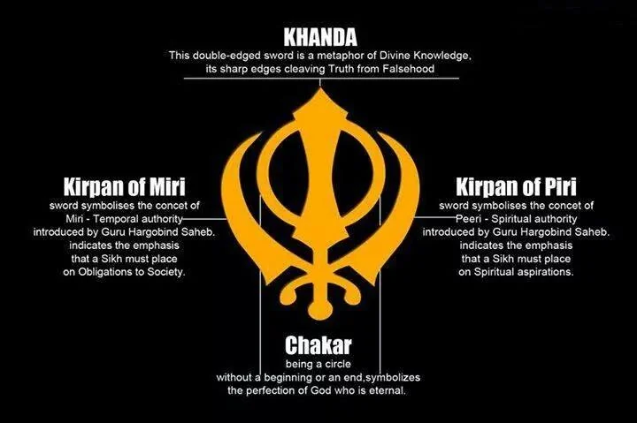 | विश्वास
|
गुरु ग्रंथ साहिब के बारे में |
|
|---|---|
| 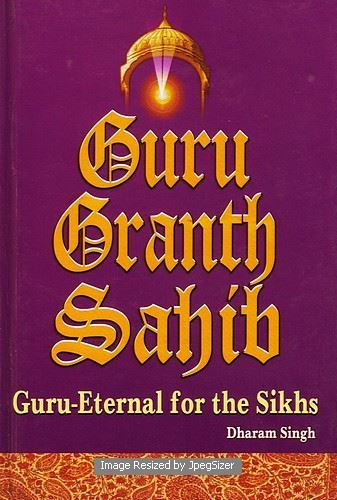 | गुरु ग्रंथ साहिब सिख धर्म का पवित्र ग्रंथ और गुरु है। इसे गुरु गोबिंद सिंह जी ने 1708 में सिखों का अंतिम गुरु घोषित किया। इसमें सिख धर्म के गुरुओं और संत कवियों की रचनाएँ शामिल हैं। यह ग्रंथ भक्ति, सेवा, समानता और भाईचारे का संदेश देता है। गुरु ग्रंथ साहिब का पाठ गुरुद्वारों में श्रद्धा से होता है और यह सिखों को आध्यात्मिक मार्गदर्शन प्रदान करता है। |
सिख धर्म के सभी गुरुओं के बारे में |
||
|---|---|---|
| 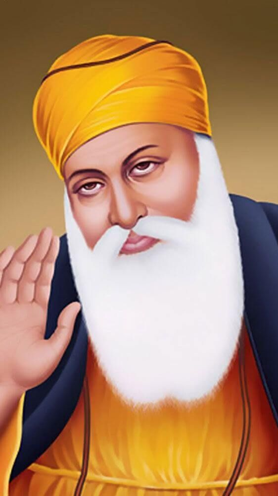 | गुरु नानक देव जी | सिख धर्म के संस्थापक, जिन्होंने एक ईश्वर, सत्य, और मानवता की सेवा का संदेश दिया। उन्होंने जात-पात और भेदभाव का विरोध किया। |
| 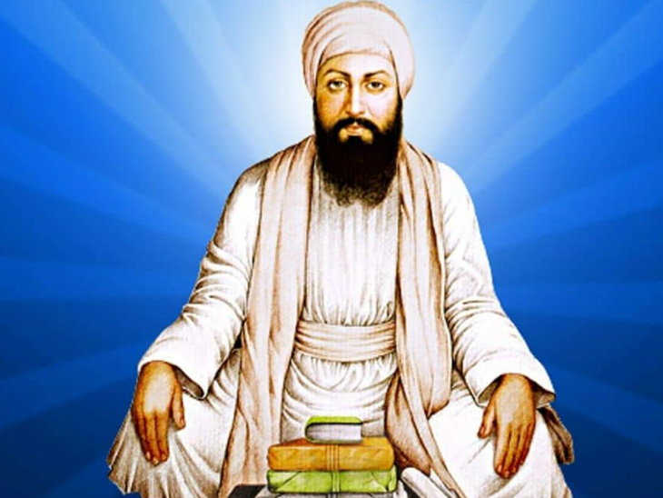 | गुरु अंगद देव जी | गुरमुखी लिपि का विकास किया और इसे सिख धर्म के अनुयायियों में प्रचलित किया। |
 |
गुरु अमर दास जी | लंगर प्रथा को मजबूती दी और महिलाओं के अधिकारों के लिए काम किया। |
| 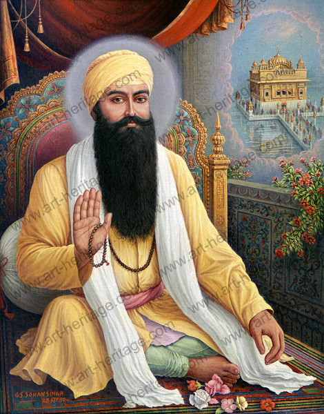 | गुरु राम दास जी | अमृतसर शहर की स्थापना की और स्वर्ण मंदिर के निर्माण की नींव रखी। |
 |
गुरु अर्जन देव जी | गुरु ग्रंथ साहिब का संकलन किया और हरमंदिर साहिब का निर्माण पूरा करवाया। |
| 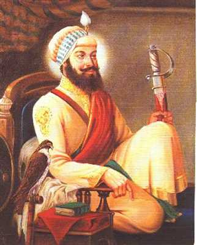 | गुरु हरगोबिंद साहिब जी | सिखों को आत्मरक्षा के लिए सशक्त किया और आध्यात्मिक एवं राजनीतिक संतुलन की शिक्षा दी। |
| 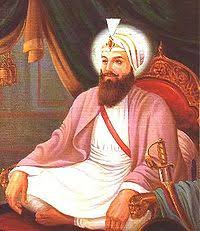 | गुरु हर राय जी | पर्यावरण संरक्षण और चिकित्सा सेवा को बढ़ावा दिया। |
| 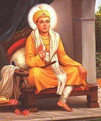 | गुरु हरकृष्ण साहिब जी | मानवता की सेवा के लिए प्रसिद्ध, खासकर रोगियों की सेवा के लिए। |
| 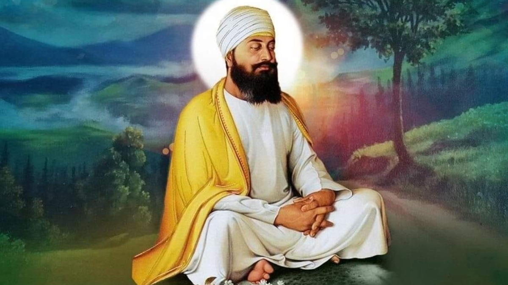 | गुरु तेग बहादुर जी | धार्मिक स्वतंत्रता और मानवाधिकारों की रक्षा के लिए अपने जीवन का बलिदान दिया। |
| 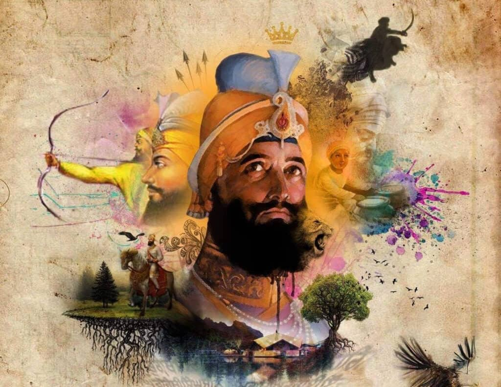 | गुरु गोबिंद सिंह जी | खालसा पंथ की स्थापना की और गुरु ग्रंथ साहिब को सिखों का अंतिम और स्थायी गुरु घोषित किया। |
सिख धर्म के पूजा स्थल |
|
|---|---|
सिख धर्म में पूजा के लिए गुरुद्वारा मुख्य स्थल होता है। गुरुद्वारा का अर्थ है "गुरु का द्वार"। यह वह स्थान है जहाँ सिख समुदाय इकट्ठा होकर गुरु ग्रंथ साहिब के पाठ, कीर्तन (धार्मिक संगीत), और अरदास (प्रार्थना) करते हैं।
गुरुद्वारे की विशेषताएँ:
|
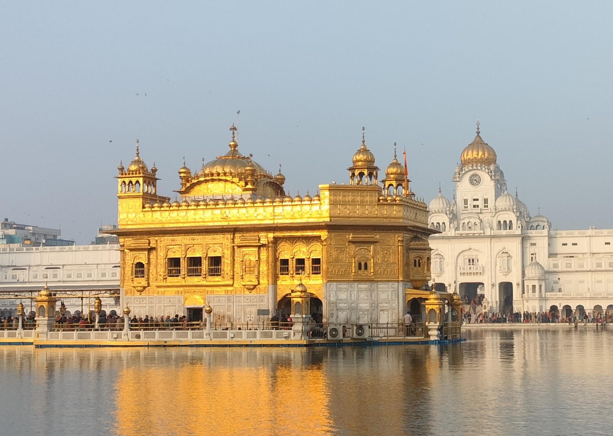 |
सिख धर्म के त्योहार |
||
|---|---|---|
 |
गुरुपर्व (गुरु नानक जयंती) |
|
| 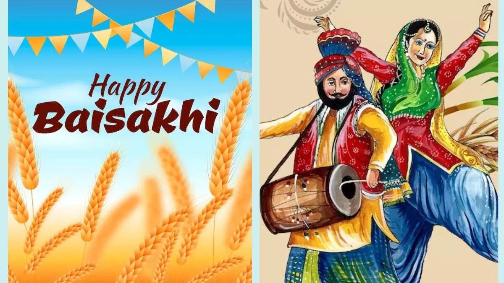 | बैसाखी |
|
| 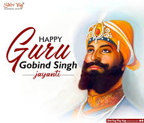 | गुरु गोबिंद सिंह जयंती |
|
| 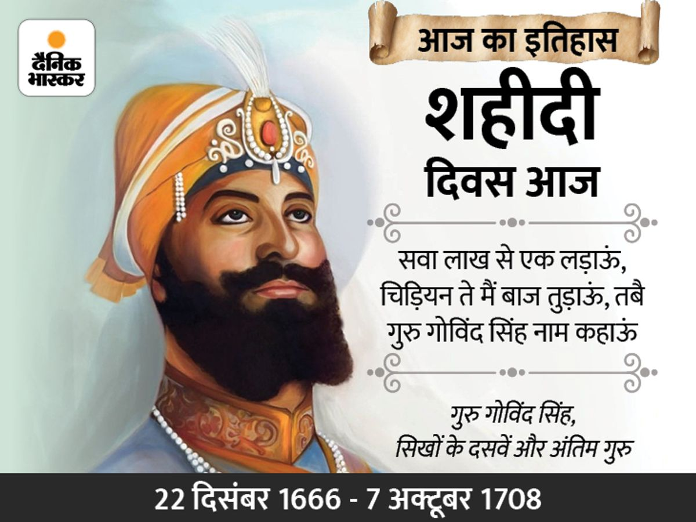 | शहीदी दिवस |
|
| 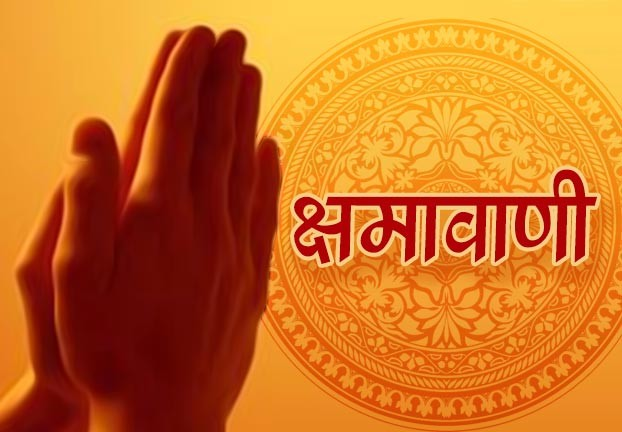 | माघी |
|
| 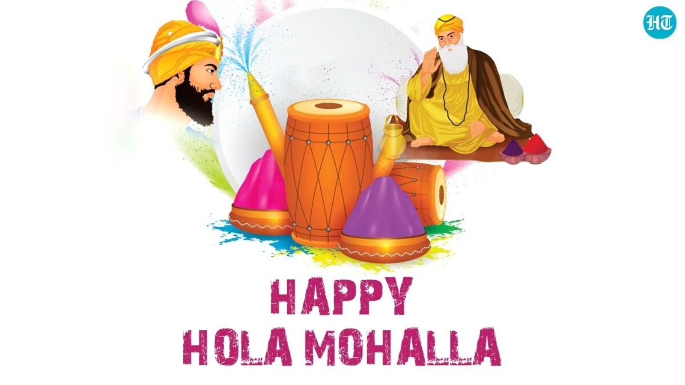 | होला मोहल्ला |
|
सिख धर्म में संगीत |
|
|---|---|
सिख धर्म में नृत्य का महत्व |
|
|---|---|
| 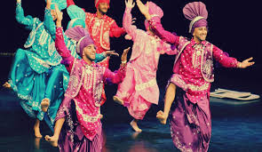 | |